Maps¶
ANA - Anachronia¶
3 locations
ASM - Anachronia Swamp Mine
BEACH - Anachronia Beach
SG - Spirit Grove
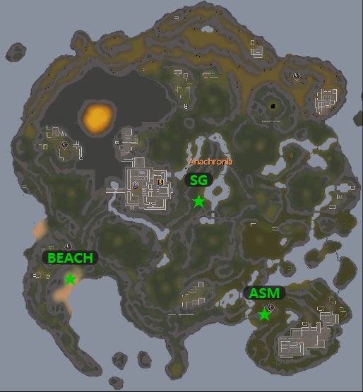
ASG - Kingdom of Asgarnia¶
6 locations
ART - artisan workshop
CG - crafting guild
HERO - Hero’s Guild
LAKE - Taverly Lake
RIM - Rimmington mine
WF - west Falador mine
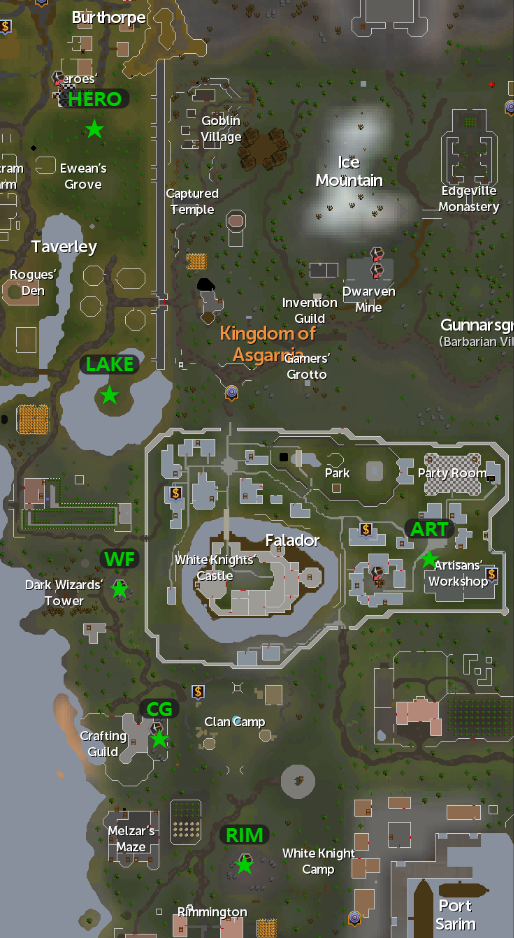
ASH - Ashdale¶
2 locations
ASH-N - Ashdale North
ASH-S - Ashdale South
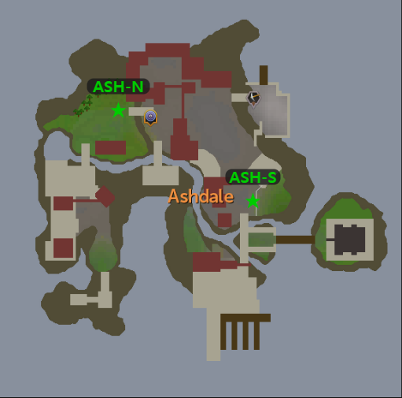
C/K - Crandor & Karamja¶
5 locations
BRIM - west of Karamja lodestone
CRAN - Crandor island s.w. corner
HS - horseshoe mine n.w. Brim
NATS - nature altar west
SHILO - Shilo Village gem mine
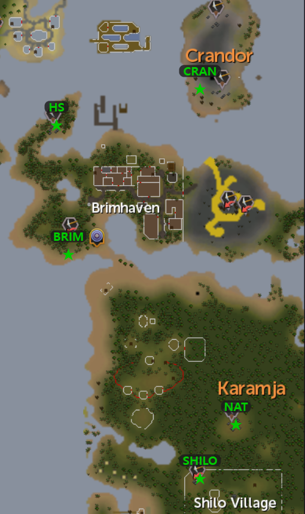
DAEM - Daemonheim¶
2 locations
DAEM-E - Daemonheim East
DAEM-W - Daemonheim West
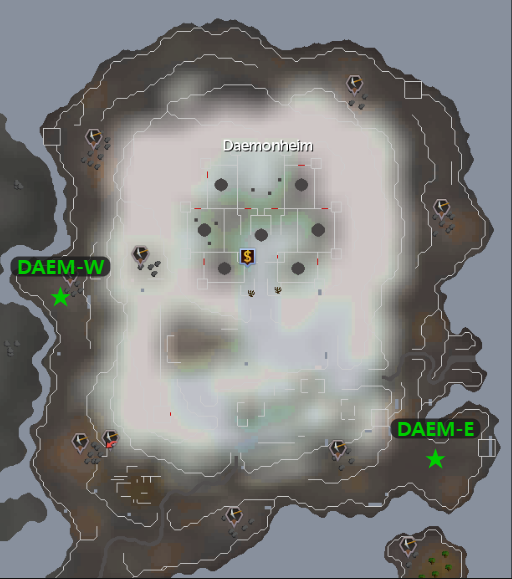
DES - Kharidian Desert¶
7 locations
AKB - Al Kharid bank (lodestone)
HET - Het's Oasis (formerly DA - duel arena)
NARDAH - near bank
QUARRY - bandit camp
SCORPS - scorpion mine west of duel arena
UZER - Uzer mine, n.e.
VULT - vulture mine
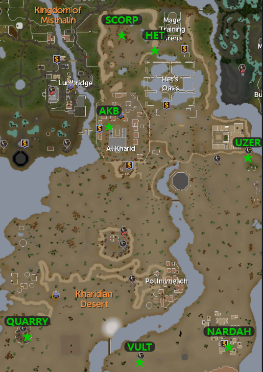
F/L - Fremmenik Provinces/Lunar Isle¶
6 locations
JATZ - jatizso n.w. outside town
KELD - Keldagrim mine entrance (east of Fremmy lode)
LUNAR - Lunar Island near suqahs
MISC - Miscellania
NEITZ - Neitiznot (mid island east)
REL - Rellekka mine
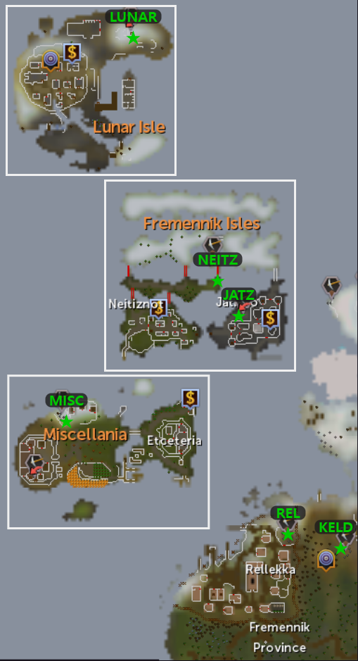
FELD - Feldip Hills¶
1 locations
FELD - Jungle Strykewyrm
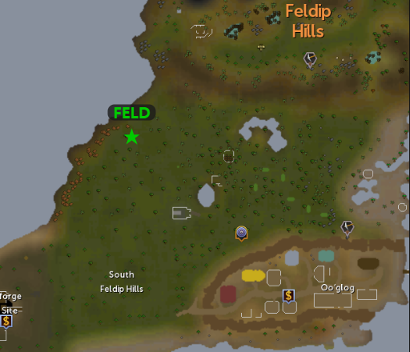
GROVE - Lost Grove¶
3 locations
GROVE-N - Lost Grove North
GROVE-E - Lost Grove East
GROVE-W - Lost Grove West
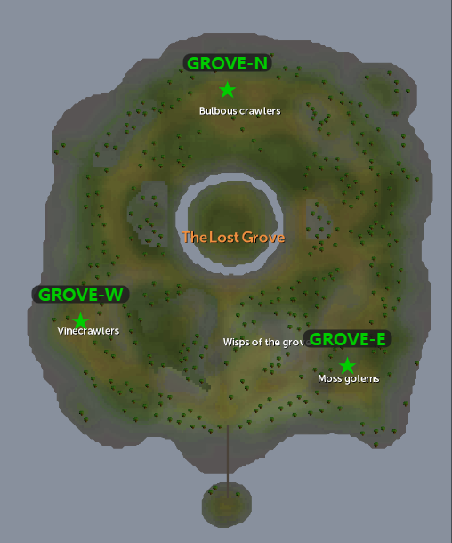
KAND - Kingdom of Kandarin¶
6 locations
CATH - Catherby
CT - coal trucks west of Seers
LEG - legends guild
MON - monastary south ardy zoo
SWK - south west Khazard..north Yanille
YAN - Yanille bank
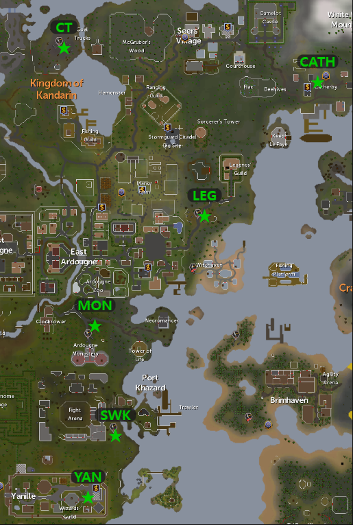
M/M - Morytania & Mos le'Harmless¶
3 locations
BDR - Burgh De Rott bank
CAN - Canifis bank
MOS - Mos le Harmless n.e. of docks
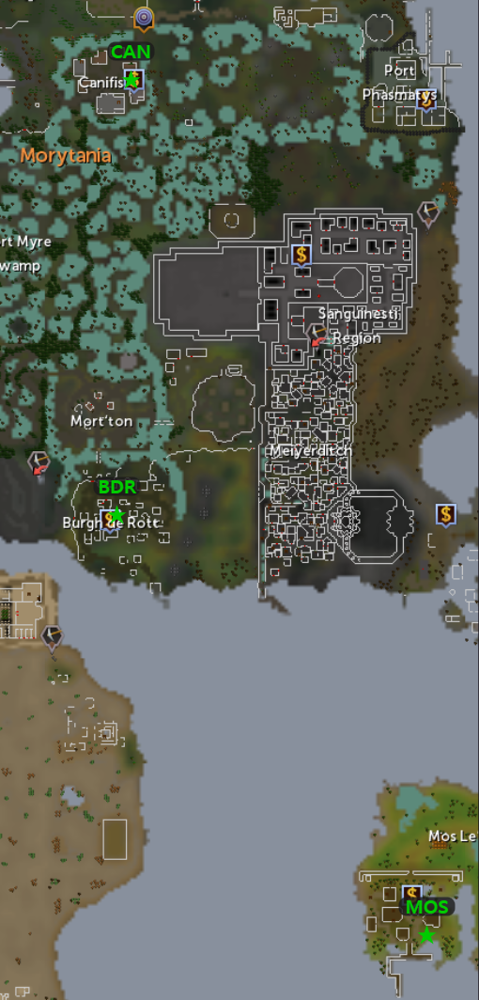
MENA - Menaphos¶
2 locations
MENA-ID - Menaphos Imperial District
MENA-WD - Menaphos Workers District
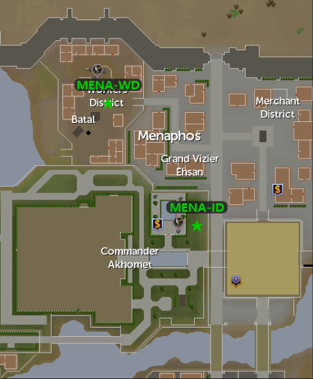
MIST - Kingdom of Misthalin¶
4 locations
AUB - Aubury rune store in Varrock
CHAMPS - champion guild
LUMB - Lumby mine s.e. corner of swamp
SEV - south east Varrock mine
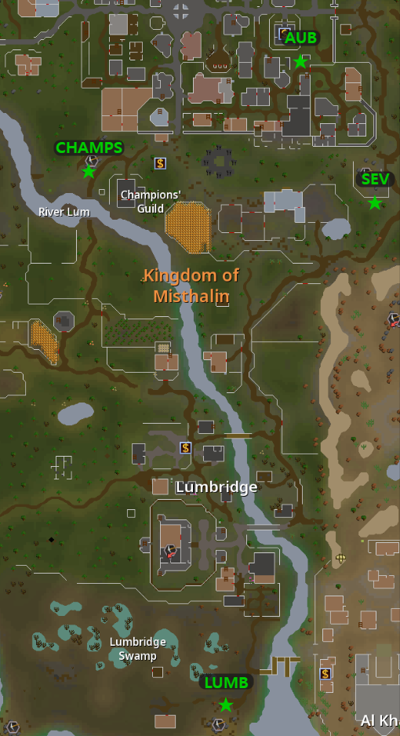
P/G/T - Piscatoris/Gnome Stronghold/Tirannwn¶
5 locations
AIRUT - Pisc Near Airuts
ELF - Lletya near archery shop
GS - gnome stronghold bank
PISC - Piscatoris
POIS - Poison Wastes
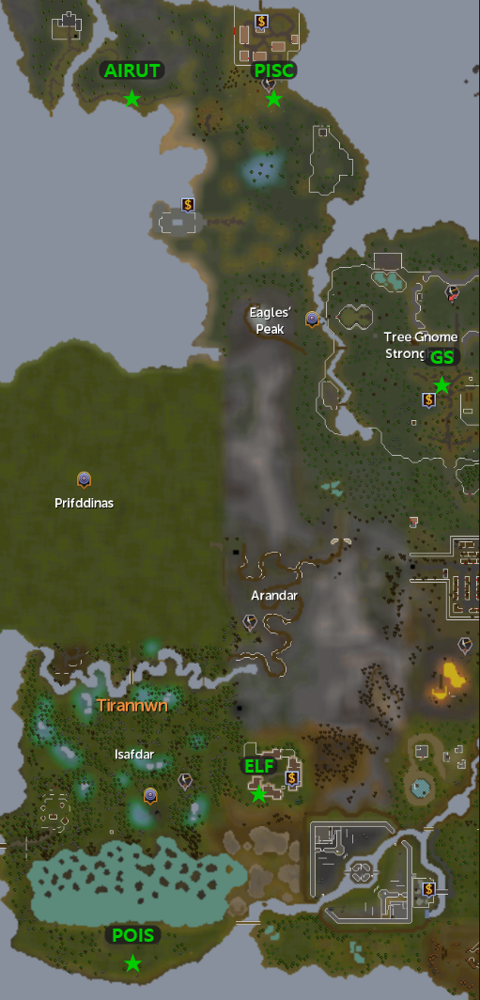
TUSK - Tuska¶
2 locations
TUSK-N - Tuska North
TUSK-S - Tuska South
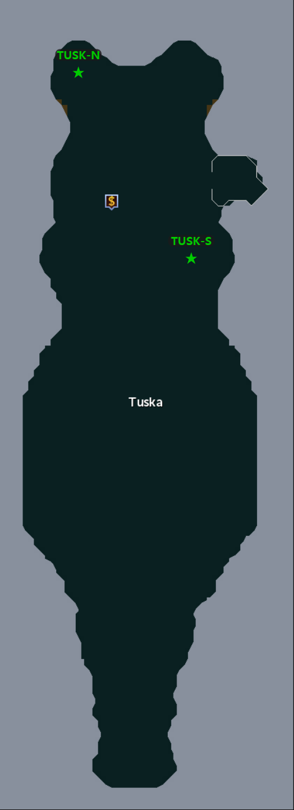
WILD - Wilderness¶
6 locations
HOBS - lvl 35 hobgoblin mine
LM - level 47 lava maze (formerly ‘rr’)
MB - mage bank wild
PM - lvl 53 pirate mine
SM - lvl 10 skeleton mine
ZM - lvl 7 wildy zamorak mage
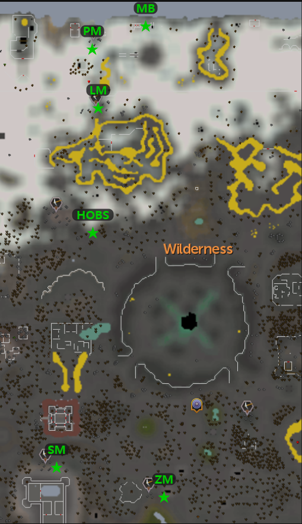